使用2D绘图上下文提供的方法，可以绘制简单的2D图形，比如矩形、弧线和路径。2D上下文的坐标开始于<canvas>元素的左上角，原点坐标是(0,0)。所有坐标值都基于这个原点计算，x值越大表示越靠右，y值越大表示越靠下。默认情况下，width和height表示水平和垂直两个方向上可用的像素数目。
2D上下文的两种基本绘图操作是填充和描边。填充，就是用指定的样式（颜色、渐变或图像）填充图形；描边，就是只在图形的边缘画线。大多数2D上下文操作都会细分为填充和描边两个操作，而操作的结果取决于两个属性：fillStyle和strokeStyle。
这两个属性的值可以是字符串、渐变对象或模式对象，而且它们的默认值都是"#000000"。如果为它们指定表示颜色的字符串值，可以使用CSS中指定颜色值的任何格式，包括颜色名、十六进制码、rgb、rgba、hsl或hsla。举个例子：
var drawing = document.getElementById("drawing");
//确定浏览器支持<canvas>元素
if (drawing.getContext){
var context = drawing.getContext("2d");
context.strokeStyle = "red";
context.fillStyle = "#0000ff";
}
以上代码将strokeStyle设置为red（CSS中的颜色名），将fillStyle设置为#0000ff（蓝色）。然后，所有涉及描边和填充的操作都将使用这两个样式，直至重新设置这两个值。如前所述，这两个属性的值也可以是渐变对象或模式对象。本章后面会讨论这两种对象。
矩形是唯一一种可以直接在2D上下文中绘制的形状。与矩形有关的方法包括fillRect()、strokeRect()和clearRect()。这三个方法都能接收4个参数：矩形的x坐标、矩形的y坐标、矩形宽度和矩形高度。这些参数的单位都是像素。
首先，fillRect()方法在画布上绘制的矩形会填充指定的颜色。填充的颜色通过fillStyle属性指定，比如：
var drawing = document.getElementById("drawing");
//确定浏览器支持<canvas>元素
if (drawing.getContext){
var context = drawing.getContext("2d");
/*
* 根据Mozilla的文档
* http://developer.mozilla.org/en/docs/Canvas_tutorial:Basic_usage
*/
//绘制红色矩形
context.fi llStyle = "#ff0000";
context.fi llRect(10, 10, 50, 50);
//绘制半透明的蓝色矩形
context.fi llStyle = "rgba(0,0,255,0.5)";
context.fi llRect(30, 30, 50, 50);
}
2DFillRectExample01.htm
以上代码首先将fillStyle设置为红色，然后从(10,10)处开始绘制矩形，矩形的宽和高均为50像素。然后，通过rgba()格式再将fillStyle设置为半透明的蓝色，在第一个矩形上面绘制第二个矩形。结果就是可以透过蓝色的矩形看到红色的矩形（见图15-1）。
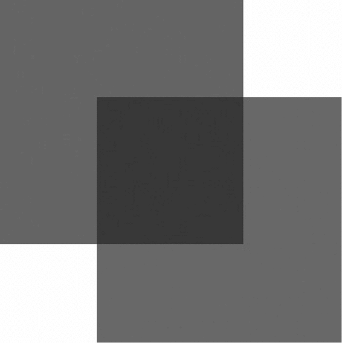
图 15-1
strokeRect()方法在画布上绘制的矩形会使用指定的颜色描边。描边颜色通过strokeStyle属性指定。比如：
var drawing = document.getElementById("drawing");
//确定浏览器支持<canvas>元素
if (drawing.getContext){
var context = drawing.getContext("2d");
/*
* 根据Mozilla的文档
* http://developer.mozilla.org/en/docs/Canvas_tutorial:Basic_usage
*/
//绘制红色描边矩形
context.strokeStyle = "#ff0000";
context.strokeRect(10, 10, 50, 50);
//绘制半透明的蓝色描边矩形
context.strokeStyle = "rgba(0,0,255,0.5)";
context.strokeRect(30, 30, 50, 50);
}
2DStrokeRectExample01.htm/I>
以上代码绘制了两个重叠的矩形。不过，这两个矩形都只有框线，内部并没有填充颜色（见图15-2）。
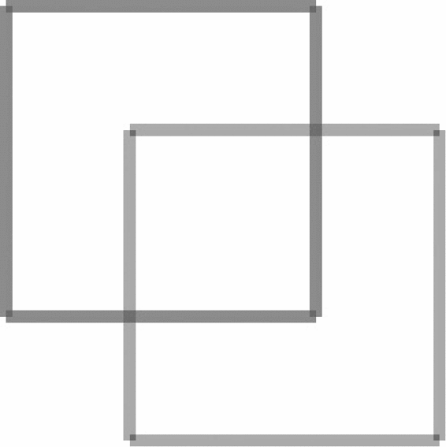
图 15-2
描边线条的宽度由
lineWidth属性控制，该属性的值可以是任意整数。另外，通过lineCap属性可以控制线条末端的形状是平头、圆头还是方头（"butt"、"round"或"square"），通过lineJoin属性可以控制线条相交的方式是圆交、斜交还是斜接（"round"、"bevel"或"miter"）。
最后，clearRect()方法用于清除画布上的矩形区域。本质上，这个方法可以把绘制上下文中的某一矩形区域变透明。通过绘制形状然后再清除指定区域，就可以生成有意思的效果，例如把某个形状切掉一块。下面看一个例子。
var drawing = document.getElementById("drawing");
//确定浏览器支持<canvas>元素
if (drawing.getContext){
var context = drawing.getContext("2d");
/*
* 根据Mozilla的文档
* http://developer.mozilla.org/en/docs/Canvas_tutorial:Basic_usage
*/
//绘制红色矩形
context.fillStyle = "#ff0000";
context.fillRect(10, 10, 50, 50);
//绘制半透明的蓝色矩形
context.fillStyle = "rgba(0,0,255,0.5)";
context.fillRect(30, 30, 50, 50);
//在两个矩形重叠的地方清除一个小矩形
context.clearRect(40, 40, 10, 10);
}
2DClearRectExample01.htm
如图15-3所示，两个填充矩形重叠在一起，而重叠的地方又被清除了一个小矩形区域。
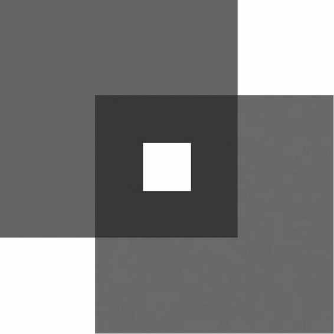
图 15-3
2D绘制上下文支持很多在画布上绘制路径的方法。通过路径可以创造出复杂的形状和线条。要绘制路径，首先必须调用beginPath()方法，表示要开始绘制新路径。然后，再通过调用下列方法来实际地绘制路径。
arc(x, y, radius, startAngle, endAngle, counterclockwise)：以(x,y)为圆心绘制一条弧线，弧线半径为radius，起始和结束角度（用弧度表示）分别为startAngle和endAngle。最后一个参数表示startAngle和endAngle是否按逆时针方向计算，值为false表示按顺时针方向计算。
arcTo(x1, y1, x2, y2, radius)：从上一点开始绘制一条弧线，到(x2,y2)为止，并且以给定的半径radius穿过(x1,y1)。
bezierCurveTo(c1x, c1y, c2x, c2y, x, y)：从上一点开始绘制一条曲线，到(x,y)为止，并且以(c1x,c1y)和(c2x,c2y)为控制点。
lineTo(x, y)：从上一点开始绘制一条直线，到(x,y)为止。
moveTo(x, y)：将绘图游标移动到(x,y)，不画线。
quadraticCurveTo(cx, cy, x, y)：从上一点开始绘制一条二次曲线，到(x,y)为止，并且以(cx,cy)作为控制点。
rect(x, y, width, height)：从点(x,y)开始绘制一个矩形，宽度和高度分别由width和height指定。这个方法绘制的是矩形路径，而不是strokeRect()和fillRect()所绘制的独立的形状。
创建了路径后，接下来有几种可能的选择。如果想绘制一条连接到路径起点的线条，可以调用closePath()。如果路径已经完成，你想用fillStyle填充它，可以调用fill()方法。另外，还可以调用stroke()方法对路径描边，描边使用的是strokeStyle。最后还可以调用clip()，这个方法可以在路径上创建一个剪切区域。
下面看一个例子，即绘制一个不带数字的时钟表盘。
var drawing = document.getElementById("drawing");
//确定浏览器支持<canvas>元素
if (drawing.getContext){
var context = drawing.getContext("2d");
//开始路径
context.beginPath();
//绘制外圆
context.arc(100, 100, 99, 0, 2 * Math.PI, false);
//绘制内圆
context.moveTo(194, 100);
context.arc(100, 100, 94, 0, 2 * Math.PI, false);
//绘制分针
context.moveTo(100, 100);
context.lineTo(100, 15);
//绘制时针
context.moveTo(100, 100);
context.lineTo(35, 100);
//描边路径
context.stroke();
}
2DPathExample01.htm
这个例子使用arc()方法绘制了两个圆形：一个外圆和一个内圆，构成了表盘的边框。外圆的半径是99像素，圆心位于点(100,100)，也是画布的中心点。为了绘制一个完整的圆形，我们从0弧度开始，绘制2π弧度（通过Math.PI来计算）。在绘制内圆之前，必须把路径移动到外圆上的某一点，以避免绘制出多余的线条。第二次调用arc()使用了小一点的半径，以便创造边框的效果。然后，组合使用moveTo()和lineTo()方法来绘制时针和分针。最后一步是调用stroke()方法，这样才能把图形绘制到画布上，如图15-4所示。
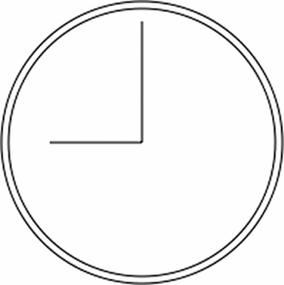
图 15-4
在2D绘图上下文中，路径是一种主要的绘图方式，因为路径能为要绘制的图形提供更多控制。由于路径的使用很频繁，所以就有了一个名为isPointInPath()的方法。这个方法接收x和y坐标作为参数，用于在路径被关闭之前确定画布上的某一点是否位于路径上，例如：
if (context.isPointInPath(100, 100)){
alert("Point (100, 100) is in the path.");
}
2D上下文中的路径API已经非常稳定，可以利用它们结合不同的填充和描边样式，绘制出非常复杂的图形来。
文本与图形总是如影随形。为此，2D绘图上下文也提供了绘制文本的方法。绘制文本主要有两个方法：fillText()和strokeText()。这两个方法都可以接收4个参数：要绘制的文本字符串、x坐标、y坐标和可选的最大像素宽度。而且，这两个方法都以下列3个属性为基础。
font：表示文本样式、大小及字体，用CSS中指定字体的格式来指定，例如"10px Arial"。
textAlign：表示文本对齐方式。可能的值有"start"、"end"、"left"、"right"和"center"。建议使用"start"和"end"，不要使用"left"和"right"，因为前两者的意思更稳妥，能同时适合从左到右和从右到左显示（阅读）的语言。
textBaseline：表示文本的基线。可能的值有"top"、"hanging"、"middle"、"alphabetic"、"ideographic"和"bottom"。
这几个属性都有默认值，因此没有必要每次使用它们都重新设置一遍值。fillText()方法使用fillStyle属性绘制文本，而strokeText()方法使用strokeStyle属性为文本描边。相对来说，还是使用fillText()的时候更多，因为该方法模仿了在网页中正常显示文本。例如，下面的代码在前一节创建的表盘上方绘制了数字12：
context.font = "bold 14px Arial";
context.textAlign = "center";
context.textBaseline = "middle";
context.fillText("12", 100, 20);
2D TextExample01.htm
结果如图15-5所示。
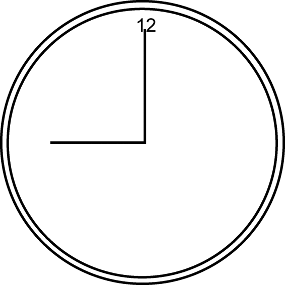
图 15-5
因为这里把textAlign设置为"center"，把textBaseline设置为"middle"，所以坐标(100,20)表示的是文本水平和垂直中点的坐标。如果将textAlign设置为"start"，则x坐标表示的是文本左端的位置（从左到右阅读的语言）；设置为"end"，则x坐标表示的是文本右端的位置（从左到右阅读的语言）。例如：
//正常
context.font = "bold 14px Arial";
context.textAlign = "center";
context.textBaseline = "middle";
context.fillText("12", 100, 20);
//起点对齐
context.textAlign = "start";
context.fi llText("12", 100, 40);
//终点对齐
context.textAlign = "end";
context.fi llText("12", 100, 60);
2DTextExample02.htm
这一回绘制了三个字符串"12"，每个字符串的x坐标值相同，但textAlign值不同。另外，后两个字符串的y坐标依次增大，以避免相互重叠。结果如图15-6所示。
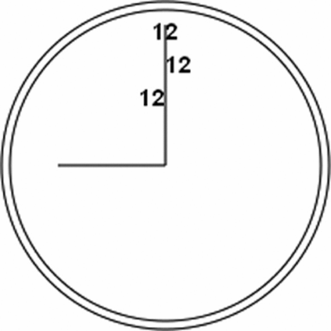
图 15-6
表盘中的分针恰好位于正中间，因此文本的水平对齐方式如何变化也能够一目了然。类似地，修改textBaseline属性的值可以调整文本的垂直对齐方式：值为"top"，y坐标表示文本顶端；值为"bottom"，y坐标表示文本底端；值为"hanging"、"alphabetic"和"ideographic"，则y坐标分别指向字体的特定基线坐标。
由于绘制文本比较复杂，特别是需要把文本控制在某一区域中的时候，2D上下文提供了辅助确定文本大小的方法measureText()。这个方法接收一个参数，即要绘制的文本；返回一个TextMetrics对象。返回的对象目前只有一个width属性，但将来还会增加更多度量属性。
measureText()方法利用font、textAlign和textBaseline的当前值计算指定文本的大小。比如，假设你想在一个140像素宽的矩形区域中绘制文本Hello world!，下面的代码从100像素的字体大小开始递减，最终会找到合适的字体大小。
var fontSize = 100;
context.font = fontSize + "px Arial";
while(context.measureText("Hello world!").width > 140){
fontSize--;
context.font = fontSize + "px Arial";
}
context.fillText("Hello world!", 10, 10);
context.fillText("Font size is " + fontSize + "px", 10, 50);
2DTextExample03.htm
前面提到过，fillText和strokeText()方法都可以接收第四个参数，也就是文本的最大像素宽度。不过，这个可选的参数尚未得到所有浏览器支持（最早支持它的是Firefox 4）。提供这个参数后，调用fillText()或strokeText()时如果传入的字符串大于最大宽度，则绘制的文本字符的高度正确，但宽度会收缩以适应最大宽度。图15-7展示了这个效果。
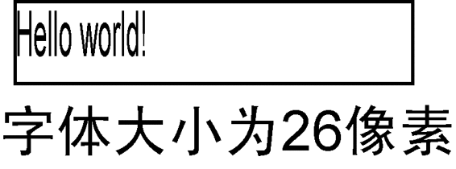
图 15-7
绘制文本还是相对比较复杂的操作，因此支持<canvas>元素的浏览器也并未完全实现所有与绘制文本相关的API。
通过上下文的变换，可以把处理后的图像绘制到画布上。2D绘制上下文支持各种基本的绘制变换。创建绘制上下文时，会以默认值初始化变换矩阵，在默认的变换矩阵下，所有处理都按描述直接绘制。为绘制上下文应用变换，会导致使用不同的变换矩阵应用处理，从而产生不同的结果。
可以通过如下方法来修改变换矩阵。
rotate (angle)：围绕原点旋转图像angle弧度。
scale (scaleX, scaleY)：缩放图像，在x方向乘以scaleX，在y方向乘以scaleY。scaleX和scaleY的默认值都是1.0。
translate (x, y)：将坐标原点移动到(x,y)。执行这个变换之后，坐标(0,0)会变成之前由(x,y)表示的点。
transform (m1_1, m1_2, m2_1, m2_2, dx, dy)：直接修改变换矩阵，方式是乘以如下 矩阵。
m1_1 m1_2 dx
m2_1 m2_2 dy
0 0 1
setTransform(m1_1, m1_2, m2_1, m2_2, dx, dy)：将变换矩阵重置为默认状态，然后再调用transform()。
变换有可能很简单，但也可能很复杂，这都要视情况而定。比如，就拿前面例子中绘制表针来说，如果把原点变换到表盘的中心，然后再绘制表针就容易多了。请看下面的例子。
var drawing = document.getElementById("drawing");
//确定浏览器支持<canvas>元素
if (drawing.getContext){
var context = drawing.getContext("2d");
//开始路径
context.beginPath();
//绘制外圆
context.arc(100, 100, 99, 0, 2 * Math.PI, false);
//绘制内圆
context.moveTo(194, 100);
context.arc(100, 100, 94, 0, 2 * Math.PI, false);
//变换原点
context.translate(100, 100);
//绘制分针
context.moveTo(0,0);
context.lineTo(0, -85);
//绘制时针
context.moveTo(0, 0);
context.lineTo(-65, 0);
//描边路径
context.stroke();
}
2DTransformExample01.htm
把原点变换到时钟表盘的中心点(100,100)后，在同一方向上绘制线条就变成了简单的数学问题了。所有数学计算都基于(0,0)，而不是(100,100)。还可以更进一步，像下面这样使用rotate()方法旋转时钟的表针。
var drawing = document.getElementById("drawing");
//确定浏览器支持<canvas>元素
if (drawing.getContext){
var context = drawing.getContext("2d");
//开始路径
context.beginPath();
//绘制外圆
context.arc(100, 100, 99, 0, 2 * Math.PI, false);
//绘制内圆
context.moveTo(194, 100);
context.arc(100, 100, 94, 0, 2 * Math.PI, false);
//变换原点
context.translate(100, 100);
//旋转表针
context.rotate(1);
//绘制分针
context.moveTo(0,0);
context.lineTo(0, -85);
//绘制时针
context.moveTo(0, 0);
context.lineTo(-65, 0);
//描边路径
context.stroke();
}
2DTransformExample01.htm
因为原点已经变换到了时钟表盘的中心点，所以旋转也是以该点为圆心的。结果就像是表针真地被固定在表盘中心一样，然后向右旋转了一定角度。结果如图15-8所示。
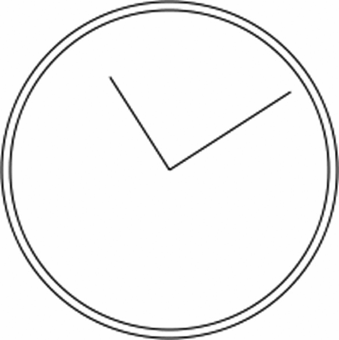
图 15-8
无论是刚才执行的变换，还是fillStyle、strokeStyle等属性，都会在当前上下文中一直有效，除非再对上下文进行什么修改。虽然没有什么办法把上下文中的一切都重置回默认值，但有两个方法可以跟踪上下文的状态变化。如果你知道将来还要返回某组属性与变换的组合，可以调用save()方法。调用这个方法后，当时的所有设置都会进入一个栈结构，得以妥善保管。然后可以对上下文进行其他修改。等想要回到之前保存的设置时，可以调用restore()方法，在保存设置的栈结构中向前返回一级，恢复之前的状态。连续调用save()可以把更多设置保存到栈结构中，之后再连续调用restore()则可以一级一级返回。下面来看一个例子。
context.fillStyle = "#ff0000";
context.save();
context.fillStyle = "#00ff00";
context.translate(100, 100);
context.save();
context.fillStyle = "#0000ff";
context.fillRect(0, 0, 100, 200); //从点(100,100)开始绘制蓝色矩形
context.restore();
context.fillRect(10, 10, 100, 200); //从点(110,110)开始绘制绿色矩形
context.restore();
context.fillRect(0, 0, 100, 200); //从点(0,0)开始绘制红色矩形
2DSaveRestoreExample01.htm
首先，将fillStyle设置为红色，并调用save()保存上下文状态。接下来，把fillStyle修改为绿色，把坐标原点变换到(100,100)，再调用save()保存上下文状态。然后，把fillStyle修改为蓝色并绘制蓝色的矩形。因为此时的坐标原点已经变了，所以矩形的左上角坐标实际上是(100,100)。然后调用restore()，之后fillStyle变回了绿色，因而第二个矩形就是绿色。之所以第二个矩形的起点坐标是(110,110)，是因为坐标位置的变换仍然起作用。再调用一次restore()，变换就被取消了，而fillStyle也返回了红色。所以最后一个矩形是红色的，而且绘制的起点是(0,0)。
需要注意的是，save()方法保存的只是对绘图上下文的设置和变换，不会保存绘图上下文的内容。
2D绘图上下文内置了对图像的支持。如果你想把一幅图像绘制到画布上，可以使用drawImage()方法。根据期望的最终结果不同，调用这个方法时，可以使用三种不同的参数组合。最简单的调用方式是传入一个HTML <img>元素，以及绘制该图像的起点的x和y坐标。例如：
var image = document.images[0];
context.drawImage(image, 10, 10);
2DDrawImageExample01.htm
这两行代码取得了文档中的第一幅图像，然后将它绘制到上下文中，起点为(10,10)。绘制到画布上的图像大小与原始大小一样。如果你想改变绘制后图像的大小，可以再多传入两个参数，分别表示目标宽度和目标高度。通过这种方式来缩放图像并不影响上下文的变换矩阵。例如：
context.drawImage(image, 50, 10, 20, 30);
2DDrawImageExample01.htm
执行代码后，绘制出来的图像大小会变成20×30像素。
除了上述两种方式，还可以选择把图像中的某个区域绘制到上下文中。drawImage()方法的这种调用方式总共需要传入9个参数：要绘制的图像、源图像的x坐标、源图像的y坐标、源图像的宽度、源图像的高度、目标图像的x坐标、目标图像的y坐标、目标图像的宽度、目标图像的高度。这样调用drawImage()方法可以获得最多的控制。例如：
context.drawImage(image, 0, 10, 50, 50, 0, 100, 40, 60);
2DDrawImageExample01.htm
这行代码只会把原始图像的一部分绘制到画布上。原始图像的这一部分的起点为(0,10)，宽和高都是50像素。最终绘制到上下文中的图像的起点是(0,100)，而大小变成了40×60像素。
这种调用方式可以创造出很有意思的效果，如图15-9所示。
图 15-9
除了给drawImage()方法传入HTML <img>元素外，还可以传入另一个<canvas>元素作为其第一个参数。这样，就可以把另一个画布内容绘制到当前画布上。
结合使用drawImage()和其他方法，可以对图像进行各种基本操作。而操作的结果可以通过toDataURL()方法获得1。不过，有一个例外，即图像不能来自其他域。如果图像来自其他域，调用toDataURL()会抛出一个错误。打个比方，假如位于www.example.com上的页面绘制的图像来自于www.example.com，那当前上下文就会被认为“不干净”，因而会抛出错误。
1 请读者注意，虽然本章至今一直在讨论2D绘图上下文，但
toDataURL()是Canvas对象的方法，不是上下文对象的方法。
2D上下文会根据以下几个属性的值，自动为形状或路径绘制出阴影。
shadowColor：用CSS颜色格式表示的阴影颜色，默认为黑色。
shadowOffsetX：形状或路径x轴方向的阴影偏移量，默认为0。
shadowOffsetY：形状或路径y轴方向的阴影偏移量，默认为0。
shadowBlur：模糊的像素数，默认0，即不模糊。
这些属性都可以通过context对象来修改。只要在绘制前为它们设置适当的值，就能自动产生阴影。例如：
var context = drawing.getContext("2d");
//设置阴影
context.shadowOffsetX = 5;
context.shadowOffsetY = 5;
context.shadowBlur = 4;
context.shadowColor = "rgba(0, 0, 0, 0.5)";
//绘制红色矩形
context.fillStyle = "#ff0000";
context.fillRect(10, 10, 50, 50);
//绘制蓝色矩形
context.fillStyle = "rgba(0,0,255,1)";
context.fillRect(30, 30, 50, 50);
2DFillRectShadowExample01.htm
两个矩形的阴影样式相同，结果如图15-10所示。
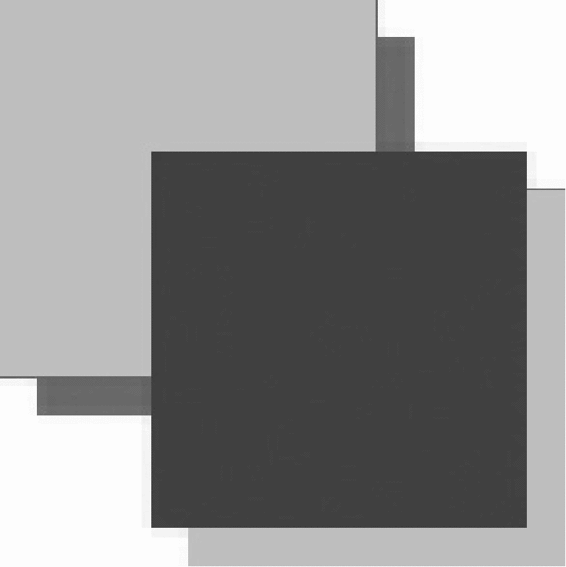
图 15-10
不同浏览器对阴影的支持有一些差异。IE9、Firefox 4和Opera 11的行为最为规范，其他浏览器多多少少会有一些奇怪的现象，甚至根本不支持阴影。Chrome（直至第10版）不能正确地为描边的形状应用实心阴影。Chrome和Safari（直至第5版）在为带透明像素的图像应用阴影时也会有问题：不透明部分的下方本来是该有阴影的，但此时则一概不见了。Safari也不能给渐变图形应用阴影，其他浏览器都可以。
渐变由CanvasGradient实例表示，很容易通过2D上下文来创建和修改。要创建一个新的线性渐变，可以调用createLinearGradient()方法。这个方法接收4个参数：起点的x坐标、起点的y坐标、终点的x坐标、终点的y坐标。调用这个方法后，它就会创建一个指定大小的渐变，并返回CanvasGradient对象的实例。
创建了渐变对象后，下一步就是使用addColorStop()方法来指定色标。这个方法接收两个参数：色标位置和CSS颜色值。色标位置是一个0（开始的颜色）到1（结束的颜色）之间的数字。例如：
var gradient = context.createLinearGradient(30, 30, 70, 70);
gradient.addColorStop(0, "white");
gradient.addColorStop(1, "black");
2DFillRectGradientExample01.htm
此时，gradient对象表示的是一个从画布上点(30,30)到点(70,70)的渐变。起点的色标是白色，终点的色标是黑色。然后就可以把fillStyle或strokeStyle设置为这个对象，从而使用渐变来绘制形状或描边：
//绘制红色矩形 context.fillStyle = "#ff0000"; context.fillRect(10, 10, 50, 50); //绘制渐变矩形 context.fillStyle = gradient; context.fillRect(30, 30, 50, 50);
2DFillRectGradientExample01.htm
为了让渐变覆盖整个矩形，而不是仅应用到矩形的一部分，矩形和渐变对象的坐标必须匹配才行。以上代码会得到如图15-11所示的结果。
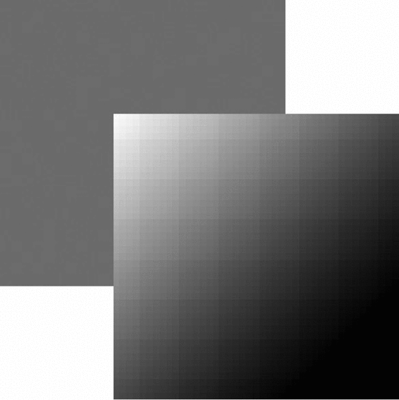
图 15-11
如果没有把矩形绘制到恰当的位置，那可能就只会显示部分渐变效果。例如：
context.fillStyle = gradient; context.fillRect(50, 50, 50, 50);
2DFillRectGradientExample02.htm
这两行代码执行后得到的矩形只有左上角稍微有一点白色。这主要是因为矩形的起点位于渐变的中间位置，而此时渐变差不多已经结束了。由于渐变不重复，所以矩形的大部分区域都是黑色。确保渐变与形状对齐非常重要，有时候可以考虑使用函数来确保坐标合适。例如：
function createRectLinearGradient(context, x, y, width, height){
return context.createLinearGradient(x, y, x+width, y+height);
}
2DFillRectGradientExample03.htm
这个函数基于起点的x和y坐标以及宽度和高度值来创建渐变对象，从而让我们可以在fillRect()中使用相同的值。
var gradient = createRectLinearGradient(context, 30, 30, 50, 50); gradient.addColorStop(0, "white"); gradient.addColorStop(1, "black"); //绘制渐变矩形 context.fi llStyle = gradient; context.fillRect(30, 30, 50, 50);
2DFillRectGradientExample03.htm
使用画布的时候，确保坐标匹配很重要，也需要一些技巧。类似createRectLinearGradient()这样的辅助方法可以让控制坐标更容易一些。
要创建径向渐变（或放射渐变），可以使用createRadialGradient()方法。这个方法接收6个参数，对应着两个圆的圆心和半径。前三个参数指定的是起点圆的原心（x和 y）及半径，后三个参数指定的是终点圆的原心（x和 y）及半径。可以把径向渐变想象成一个长圆桶，而这6个参数定义的正是这个桶的两个圆形开口的位置。如果把一个圆形开口定义得比另一个小一些，那这个圆桶就变成了圆锥体，而通过移动每个圆形开口的位置，就可达到像旋转这个圆锥体一样的效果。
如果想从某个形状的中心点开始创建一个向外扩散的径向渐变效果，就要将两个圆定义为同心圆。比如，就拿前面创建的矩形来说，径向渐变的两个圆的圆心都应该在(55,55)，因为矩形的区域是从(30,30)到(80,80)。请看代码：
var gradient = context.createRadialGradient(55, 55, 10, 55, 55, 30); gradient.addColorStop(0, "white"); gradient.addColorStop(1, "black"); //绘制红色矩形 context.fillStyle = "#ff0000"; context.fillRect(10, 10, 50, 50); //绘制渐变矩形 context.fillStyle = gradient; context.fillRect(30, 30, 50, 50);
2DFillRectGradientExample04.htm
运行代码，会得到如图15-12所示的结果。
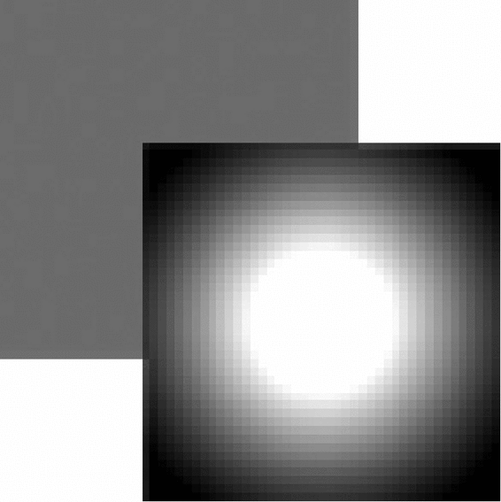
图 15-12
因为创建比较麻烦，所以径向渐变并不那么容易控制。不过，一般来说，让起点圆和终点圆保持为同心圆的情况比较多，这时候只要考虑给两个圆设置不同的半径就好了。
模式其实就是重复的图像，可以用来填充或描边图形。要创建一个新模式，可以调用createPattern()方法并传入两个参数：一个HTML <img>元素和一个表示如何重复图像的字符串。其中，第二个参数的值与CSS的background-repeat属性值相同，包括"repeat"、"repeat-x"、"repeat-y"和"no-repeat"。看一个例子。
var image = document.images[0],
pattern = context.createPattern(image, "repeat");
//绘制矩形
context.fillStyle = pattern;
context.fillRect(10, 10, 150, 150);
2DFillRectPatternExample01.htm
需要注意的是，模式与渐变一样，都是从画布的原点(0,0)开始的。将填充样式（fillStyle）设置为模式对象，只表示在某个特定的区域内显示重复的图像，而不是要从某个位置开始绘制重复的图像。上面的代码会得到如图15-13所示的结果。
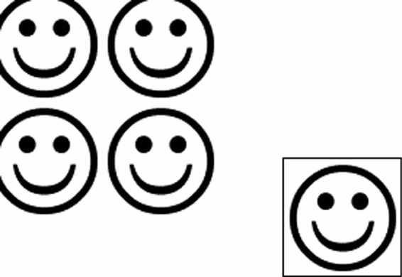
图 15-13
createPattern()方法的第一个参数也可以是一个<video>元素，或者另一个<canvas>元素。
2D上下文的一个明显的长处就是，可以通过getImageData()取得原始图像数据。这个方法接收4个参数：要取得其数据的画面区域的x和y坐标以及该区域的像素宽度和高度。例如，要取得左上角坐标为(10,5)、大小为50×50像素的区域的图像数据，可以使用以下代码：
var imageData = context.getImageData(10, 5, 50, 50);
这里返回的对象是ImageData的实例。每个ImageData对象都有三个属性：width、height和data。其中data属性是一个数组，保存着图像中每一个像素的数据。在data数组中，每一个像素用4个元素来保存，分别表示红、绿、蓝和透明度值。因此，第一个像素的数据就保存在数组的第0到第3个元素中，例如：
var data = imageData.data,
red = data[0],
green = data[1],
blue = data[2],
alpha = data[3];
数组中每个元素的值都介于0到255之间（包括0和255）。能够直接访问到原始图像数据，就能够以各种方式来操作这些数据。例如，通过修改图像数据，可以像下面这样创建一个简单的灰阶过滤器。
var drawing = document.getElementById("drawing");
//确定浏览器支持<canvas>元素
if (drawing.getContext){
var context = drawing.getContext("2d"),
image = document.images[0],
imageData, data,
i, len, average,
red, green, blue, alpha;
//绘制原始图像
context.drawImage(image, 0, 0);
//取得图像数据
imageData = context.getImageData(0, 0, image.width, image.height);
data = imageData.data;
for (i=0, len=data.length; i < len; i+=4){
red = data[i];
green = data[i+1];
blue = data[i+2];
alpha = data[i+3];
//求得rgb平均值
average = Math.floor((red + green + blue) / 3);
//设置颜色值，透明度不变
data[i] = average;
data[i+1] = average;
data[i+2] = average;
}
//回写图像数据并显示结果
imageData.data = data;
context.putImageData(imageData, 0, 0);
}
2DImageDataExample01.htm
这个例子首先在画面上绘制了一幅图像，然后取得了原始图像数据。其中的for循环遍历了图像数据中的每一个像素。这里要注意的是，每次循环控制变量i都递增4。在取得每个像素的红、绿、蓝颜色值后，计算出它们的平均值。再把这个平均值设置为每个颜色的值，结果就是去掉了每个像素的颜色，只保留了亮度接近的灰度值（即彩色变黑白）。在把data数组回写到imageData对象后，调用putImageData()方法把图像数据绘制到画布上。最终得到了图像的黑白版。
当然，通过操作原始像素值不仅能实现灰阶过滤，还能实现其他功能。要了解通过操作原始图像数据实现过滤器的更多信息，请参考Ilmari Heikkinen 的文章“Making Image Filters with Canvas”（基于Canvas的图像过滤器）：http://www.html5rocks.com/en/tutorials/canvas/imagefilters/。
还有两个会应用到2D上下文中所有绘制操作的属性：globalAlpha和globalCompositionOperation。其中，globalAlpha是一个介于0和1之间的值（包括0和1），用于指定所有绘制的透明度。默认值为0。如果所有后续操作都要基于相同的透明度，就可以先把globalAlpha设置为适当值，然后绘制，最后再把它设置回默认值0。下面来看一个例子。
//绘制红色矩形 context.fillStyle = "#ff0000"; context.fillRect(10, 10, 50, 50); //修改全局透明度 context.globalAlpha = 0.5; //绘制蓝色矩形 context.fillStyle = "rgba(0,0,255,1)"; context.fillRect(30, 30, 50, 50); //重置全局透明度 context.globalAlpha = 0;
2DGlobalAlphaExample01.htm
在这个例子中，我们把蓝色矩形绘制到了红色矩形上面。因为在绘制蓝色矩形前，globalAlpha已经被设置为0.5，所以蓝色矩形会呈现半透明效果，透过它可以看到下面的红色矩形。
第二个属性globalCompositionOperation表示后绘制的图形怎样与先绘制的图形结合。这个属性的值是字符串，可能的值如下。
source-over（默认值）：后绘制的图形位于先绘制的图形上方。
source-in：后绘制的图形与先绘制的图形重叠的部分可见，两者其他部分完全透明。
source-out：后绘制的图形与先绘制的图形不重叠的部分可见，先绘制的图形完全透明。
source-atop：后绘制的图形与先绘制的图形重叠的部分可见，先绘制图形不受影响。
destination-over：后绘制的图形位于先绘制的图形下方，只有之前透明像素下的部分才可见。
destination-in：后绘制的图形位于先绘制的图形下方，两者不重叠的部分完全透明。
destination-out：后绘制的图形擦除与先绘制的图形重叠的部分。
destination-atop：后绘制的图形位于先绘制的图形下方，在两者不重叠的地方，先绘制的图形会变透明。
lighter：后绘制的图形与先绘制的图形重叠部分的值相加，使该部分变亮。
copy：后绘制的图形完全替代与之重叠的先绘制图形。
xor：后绘制的图形与先绘制的图形重叠的部分执行“异或”操作。
这个合成操作实际上用语言或者黑白图像是很难说清楚的。要了解每个操作的具体效果，请参见https://developer.mozilla.org/samples/canvas-tutorial/6_1_canvas_composite.html。推荐使用IE9+或Firefox 4+访问前面的网页，因为这两款浏览器对Canvas的实现最完善。下面来看一个例子。
//绘制红色矩形 context.fillStyle = "#ff0000"; context.fillRect(10, 10, 50, 50); //设置合成操作 context.globalCompositeOperation = "destination-over"; //绘制蓝色矩形 context.fillStyle = "rgba(0,0,255,1)"; context.fillRect(30, 30, 50, 50);
2DGlobalCompositeOperationExample01.htm
如果不修改globalCompositionOperation，那么蓝色矩形应该位于红色矩形之上。但把globalCompositionOperation设置为"destination-over"之后，红色矩形跑到了蓝色矩形上面。
在使用globalCompositionOperation的情况下，一定要多测试一些浏览器。因为不同浏览器对这个属性的实现仍然存在较大的差别。Safari和Chrome在这方面还有问题，至于有什么问题，大家可以比较在打开上述页面的情况下，IE9+和Firefox 4+与它们有什么差异。